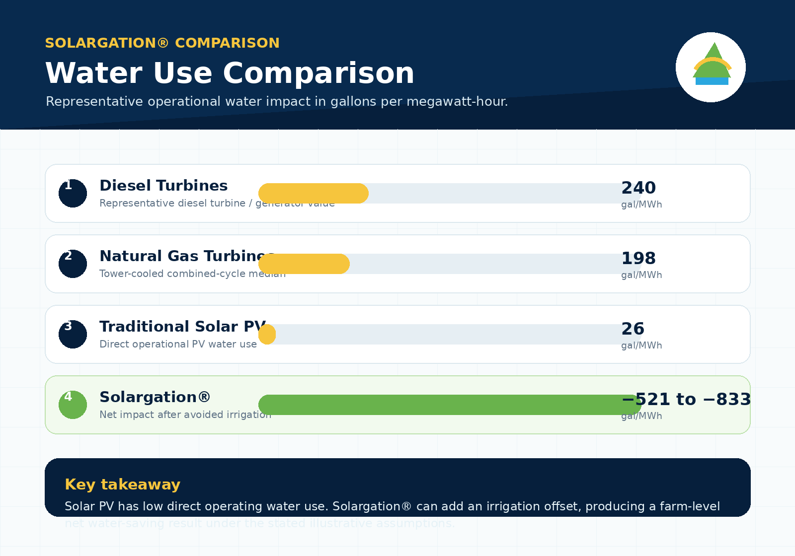

1
Diesel turbine / generator
Water use: 240 gal/MWh.
Context: representative combustion turbine / diesel value.
240gal/MWh
This responsive page translates the provided infographic into a web-ready Solargation® water-use comparison, showing representative operational water consumption for diesel, natural gas, traditional solar PV, and agricultural water-conserving Solargation®.
Water-use metric shown: gallons per megawatt-hour (gal/MWh) of operational water consumption.
For Solargation®, the page separately highlights direct PV water use, avoided irrigation, and the resulting net water impact under the illustrative assumptions from the source graphic.
The cards below preserve the numbers and framing shown in the water-use infographic, while converting them into a clearer website experience for desktop and mobile viewing.
Water use: 240 gal/MWh.
Context: representative combustion turbine / diesel value.
Water use: 198 gal/MWh.
Context: tower-cooled combined-cycle median.
Water use: 26 gal/MWh.
Context: low operational use because PV does not require cooling water.
Direct PV use: 26 gal/MWh.
Avoided irrigation: 547–859 gal/MWh.
Net water impact: −521 to −833 gal/MWh, meaning a farm-level net water-saving effect in the illustrative case.
Operational water use only is shown here. Solargation®’s irrigation offset is an illustrative estimate, not a universal value. It depends on crop type, local irrigation demand, climate, and how much irrigation reduction tracks lower soil evaporation.
Solargation® keeps the low direct operating water profile of solar PV, then layers on agricultural water savings by reducing irrigation needs under the provided assumptions. The result can be a net negative water impact on a gallons-per-megawatt-hour basis.
This page uses the exact comparative framework shown in the supplied water-use graphic and translates it into an editable, responsive HTML5 page consistent with the existing Solargation® website style.
Sources listed in the infographic: Macknick et al., NREL (2011) for utility-scale PV median 26 gal/MWh and natural gas combined-cycle tower median 198 gal/MWh; Berkman et al., Brattle Group / WECC (2014) for representative combustion turbine / diesel value 240 gal/MWh; Omer et al., Solar Energy (2022) for cumulative soil-surface evaporation under agrivoltaic systems decreasing by 21%–33%; and conversion assumptions using 7 acres/MW, 2 acre-feet per acre per year, a 20% capacity factor, and 325,851 gallons per acre-foot.
A clean downloadable comparison graphic is included in the website assets for presentation use.

This PNG summarizes the water-use comparison between diesel turbines, natural gas turbines, traditional solar PV, and Solargation® with irrigation-offset framing.
This version keeps the same overall formatting logic and coding behavior as the prior Solargation® web package while turning the water-use infographic into a practical website page for presentation, editing, and publishing.
Back to top{kind=link}